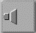
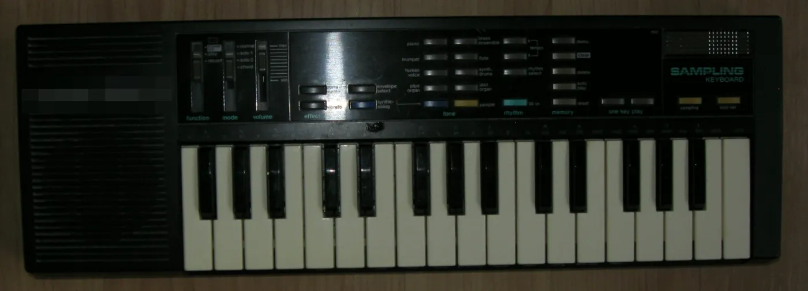

8-bit sampler1985 → now
A careful rebuild of a classic 1985 home keyboard sampler: the gritty 9 kHz sampling, the lo-fi playback filter, the little rhythm box. Plus the circuit-bending tricks people love it for.



why microsampler 85'?
everything else I tried firstrecordings, frozen
Packs and sampler libraries are recordings of the built-in tones, cleaned up and saved at 24-bit. You get the sounds someone else picked, and you can't sample anything of your own. The bit that made it a sampler is gone.
the tones, no sampler
There are a few plug-ins that play the old presets. The ones I found can't sample at all, and to my ears they're too clean, like a nice keyboard pretending to be a cheap one.
crushing isn't the crunch
Bitcrushing rarely does what people think. Fewer bits mostly adds fizz. The ringing, metallic crunch comes from downsampling and the aliasing it causes. And this keyboard is more than either: its input clipping, stepped 8-bit playback, filter, hiss and envelopes. A crusher has none of that.
made from the real thing
Microsampler 85' started with my dad's keyboard on the floor. I recorded it and measured it, rebuilt each stage (the input clipping, the 8-bit sampling at about 9.4 kHz, the playback filter, all 13 envelopes), then played the two side by side until they matched. Then I cross-checked it against a second original and its later sibling, so it isn't just one keyboard's quirks. None of the other options sounded like it at all, so I made the one that does.
over 40 years old
The hardware is great if you can find one that still works. It has no MIDI, holds one 1.47 second sample at a time, and forgets it the moment you switch it off. This does all of it in your DAW, and remembers.

'85This is my dad's keyboard from 1985, the one Microsampler 85' is built from. I spent a lot of nights with it: recording every tone and envelope, measuring how it samples, filters and loops, then playing the plug-in next to it and tweaking until the two matched.
I've got three of the old keyboards at home, and Microsampler 85' is close enough that I'd happily use it in their place. That's the bar it had to clear.
The little mic in the corner is how all the sampling on the real one happens.
how I checked it
near perfect, and here's the proofRecorded off the real keyboard, then played by the plug-in. Green is the original, dashed blue is Microsampler 85'. They sit right on top of each other, all the way through the release.
An old sampler's character isn't just its tones. It's the small physical quirks of the circuit: the bump when a note starts, how a slide behaves, how the amp breaks up when you lean on it. I measured each one on the real keyboard and built it in.
the thump
Every note on the original starts with a soft low thump, about a tenth of a second long: each voice pulls a little current from the power supply as it switches on, and the amp passes that bump along. Samples get it hardest. Microsampler 85' has it on every note and every key, shaped to the recordings.
the slide
With portamento on, the original hands the note you're holding over to the new key: the old note stops dead and only the pitch glides, in one smooth voice. Microsampler 85' slides the same way, and the glide time matches the real one to a couple of thousandths of a second.
low notes
The original's output trims its deepest sub bass, which is a big part of why it sounds tight instead of boomy on the low keys. Microsampler 85' follows the same curve, so kicks and hits on the bottom keys sit right where the real one puts them.
loud chords
Hold four keys and the original's little amp runs out of room. It clips the loudest peaks hard, top side first, and that puts a bright fizz on big chords. Microsampler 85' clips the same way, with the fizz in the same place on the wave.
And every built-in tone matches the recording's level within 1 dB over the whole note, right down to the piano's long fade.
Turn it up and watch what the sampler does to a sound: 9,400 snapshots a second, 256 levels each, and an input stage that clips when you push it. Quiet sounds go grainy, hot ones go crunchy. That's the character, and it's all in there.
The harmonics of each built-in tone, measured off the original and off Microsampler 85' on the same key. Every bar is a harmonic, loudest first.
Every built-in tone on the same key, recorded off the original and then played by Microsampler 85'. Same note, same level, two seconds each. Headphones help.
The tones are one thing; the sampler is the point. I fed my orchestra hit into the real keyboard, let it sample it, and recorded it playing back on low F, A and top C. Then Microsampler 85' sampled the same file and played the same three notes. Matched in level, nothing else done to either. The original's take has its own background hiss; in the plug-in that's a switch, and it was off.
Each tone on a low, middle and high key, plug-in against recording. Harmonics within:
- Test tones and level steps sampled on the real thing, then on the plug-in, and measured with the exact same tools.
- The clock gets measured on every key press, since the original's drifts a little as it warms up.
- Some recordings were kept back and never used for tuning. White noise it never saw still lands within 1.8 dB.
- A blind run: fake recordings made from settings I hid, put through the same process, to check it finds the right answers and not just a good-looking fit.
what's on the panel
the original first, then the extrassampling with grit
Record your mic or drop in any audio file. 8-bit at about 9.4 kHz, with the original's aliasing and hiss. 1.47 seconds like 1985, or up to 30 s. Mono or stereo. Trim, loop, normalise, export as an 8-bit WAV.
8 built-in tones
Piano, trumpet, human voice, pipe organ, brass, flute, synth drums and jazz organ, from your own tone ROM, tuned like the hardware.
13 envelopes + ADSR
Every original envelope, measured from the real thing, plus portamento and vibrato. Or draw your own ADSR.
clock bend, glitch, stutter
The bend knob drags the clock two octaves down or one up. Glitch and stutter recreate the classic shorted-pin bends.
two LFOs
Seven shapes from sine to stepped random, free or synced, each able to move the bend, glitch and stutter.
rhythm box + drum editor
The original's 11 rhythms (disco to waltz), 8 extra patterns (boom bap, breakbeat, electro, dub, trip hop…) and a step editor for your own. Typed tempo, or follow your DAW.
moog, sem, jp-8000
Three analogue filter models behind the sampler: the Moog ladder, the Oberheim SEM and the JP-8000. Each has drive, a blend knob to mix it with the dry sound, its own envelope, and an LFO that runs free or locks to your DAW's tempo.
four output filters
The original playback filter, a brighter one, wide open (every step and alias comes through), or smooth.
the FX version
A separate effect for audio tracks: run guitars, synths, drums or vocals through the 8-bit circuit live, with level and dry/wet.
and the rest
Built-in and user presets, mono / duo / 4 / 8 voices, chords, noise, two skins, computer-keyboard playing in the app.
!! the tone ROM is not included !!
The 8 built-in tones live in the original keyboard's tone ROM, which Brownie Digital can't sell you. The first time you open it, Microsampler 85' asks for your own copy (a 32,768-byte file, from hardware you own). It's checked, then kept on your Mac.
Only the 8 tones need it. The sampler, the rhythm box, the circuit bends, the LFOs and the effect plug-in all work without it.
free trial
Same installer as the full version. Until you unlock it, it plays like the original keyboard:
- the built-in tones (with your ROM), envelopes, portamento, vibrato and rhythms, 4 voices
- the stand-alone app samples like the original: 1.47 seconds, mono
Your licence key unlocks everything else, in the plug-ins too.
how to get in
- Double-click the installer (Microsampler-85.pkg). macOS will say it can't check it: Brownie Digital isn't in Apple's paid developer programme. Click Done.
- System Settings › Privacy & Security, scroll to Security, click Open Anyway. Only once.
- Follow the installer. In Logic: Software Instrument › AU Instruments › Brownie Digital. FX: Audio FX › Audio Units › Brownie Digital. Other DAWs: the VST3.
- When it's done the app opens on its set-up chat: drop your tone ROM file on it, paste the key from your email, press UNLOCK. No key? TRY IT.
get microsampler 85'
One payment, no subscription. The instrument, the effect and the app. Checkout and your licence key come from Lemon Squeezy, who handle sales tax. The download link and key arrive by email straight away. 14-day refunds.